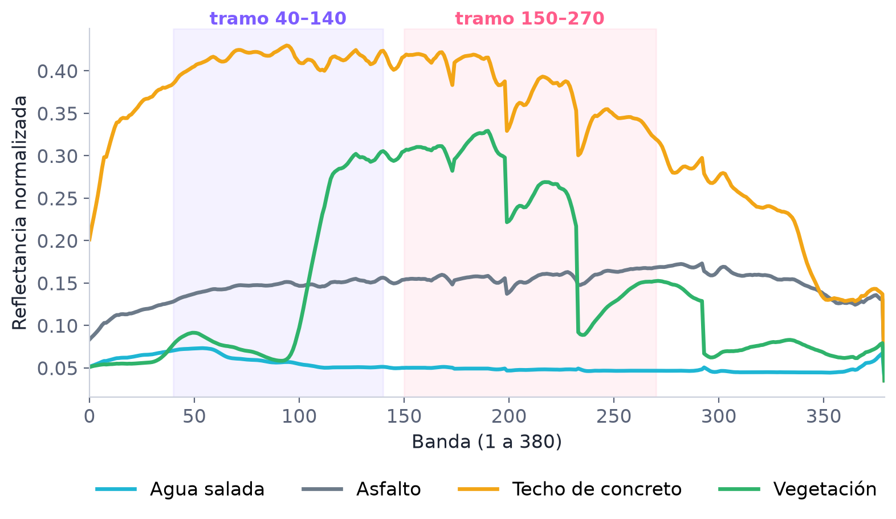
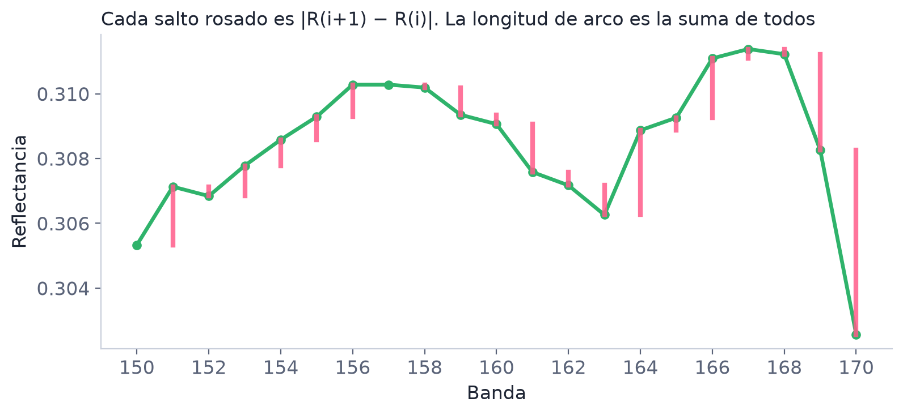
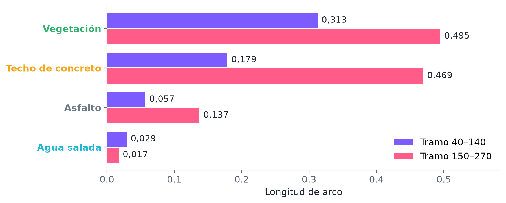
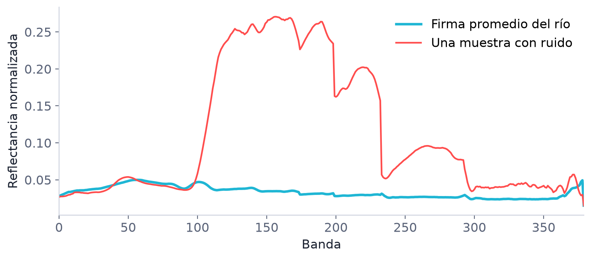
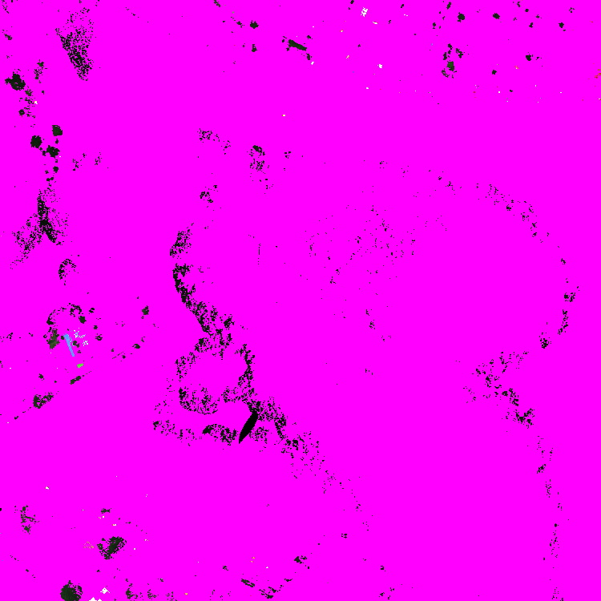
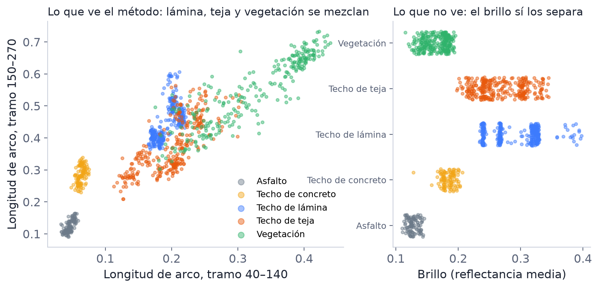

Qué hace el notebook en cada paso, del píxel a la imagen pintada, con datos de Cartagena.
Manuel Amell y Samuel Cogollo
Una foto normal guarda 3 colores por píxel (rojo, verde y azul). Estas imágenes guardan 380 bandas: cuánta luz refleja el píxel en 380 colores, muchos de los cuales el ojo no ve.
arr = np.asarray(img.load()) # 750 × 750 × 380 arr_norm = (arr - minimo) / (maximo - minimo) # todo queda entre 0 y 1 con_datos = np.max(arr, axis=2) > 0 # zonas negras = sin datos
con_datos marca las zonas negras de la imagen (en cero en todas las bandas), que no se usan ni se pintan.Si graficamos los 380 valores de un píxel sale una curva: su firma espectral. Cada material tiene una forma distinta (figura de abajo).
x,y marcados en ImageJ) y juntamos los píxeles de adentro.arr_norm[y, x, :] (primero la fila, luego la columna).otros.csv en el agua
y de los demás materiales de la imagen en los materiales nuevos.
pix_prom_train = np.median(firm_si_train, axis=0)
Es la mediana banda por banda de las firmas de entrenamiento, la curva típica del material. Usamos la mediana y no la media porque los píxeles raros la mueven menos.
def long_arco(R):
return np.sum(np.abs(np.diff(R)))
Suma cuánto sube y baja la curva de una banda a la siguiente. Una curva plana da un número pequeño y una que cambia mucho da uno grande.

No la medimos en toda la firma sino en 2 tramos: bandas 40–140 y
bandas 150–270. Así cada píxel queda resumido en 2 números, [L₁, L₂].

def similitud_porcentual(A, B):
sims = 100 * (1 - np.abs(A - B) / (np.abs(A) + np.abs(B)))
return np.mean(sims)
A son los 2 números del píxel y B los 2 de la firma promedio.
Se calcula en cada tramo y se promedia: 100 % es igual y 0 % es muy distinto. Al dividir entre |A|+|B| la diferencia es relativa:
pasar de 0,03 a 0,06 pesa lo mismo que pasar de 0,3 a 0,6.
| Ejemplo: un píxel de agua frente a la firma de vegetación | A (agua) | B (vegetación) | Similitud |
|---|---|---|---|
| Tramo 40–140 | 0,029 | 0,313 | 17 % |
| Tramo 150–270 | 0,017 | 0,495 | 7 % |
| Promedio | 12 %, no es vegetación |
Si todas las muestras buenas se parecen al menos un 73 %, un píxel con 73 % o más lo tratamos como del mismo material.

Con el 20 % apartado calculamos la similitud de cada firma y decimos "sí" si llega al umbral y "no" si no llega. Comparando con lo que sabemos salen estas medidas (en los notebooks aparecen en inglés):
Así sabemos si el umbral sirve antes de usarlo en toda la imagen.
for i in range(750): # filas for j in range(750): # columnas if not con_datos[i][j]: continue pix = arr_norm[i][j] # firma del píxel s = [long_arco(pix[40:140]), long_arco(pix[150:270])] # sus 2 números sim = similitud_porcentual(arr_s_prom, s) # contra el promedio mapa[i][j] = sim # se guarda para el mapa final if sim >= umbral: img_marcada[i][j] = color # se pinta
Recorremos los 562.500 píxeles de la imagen y a cada uno le hacemos lo mismo que a las muestras: 2 longitudes de arco, similitud con el promedio y comparación con el umbral. Si pasa, se pinta con el color del material. El porcentaje marcado de los resultados es cuántos píxeles pasaron.


Cada material deja su mapa de similitudes y su umbral. Para cada píxel:


Los errores tienen causas que se pueden medir: repetimos el método y contamos qué porcentaje de los píxeles de cada material pasa el umbral de otro material. La tabla completa está en el reporte. Estas son las causas principales.
Dos materiales que suben y bajan parecido quedan con números parecidos aunque uno sea mucho más brillante. En cartagena1, el 100 % de los píxeles de techo de lámina pasa el umbral del techo de teja y el 52 % el de la vegetación, pero su brillo es muy distinto. El asfalto y el concreto no se confunden con nada porque su forma es única.
| cartagena1 | L tramo 1 | L tramo 2 | Brillo | Umbral |
|---|---|---|---|---|
| Techo de lámina | 0,19 | 0,49 | 0,31 | 90 |
| Techo de teja | 0,22 | 0,35 | 0,27 | 78 |
| Vegetación | 0,33 | 0,55 | 0,17 | 80 |
| Asfalto | 0,04 | 0,11 | 0,13 | 83 |
| Techo de concreto | 0,06 | 0,29 | 0,19 | 91 |

El umbral es la similitud de la peor muestra limpia. Si las muestras de un material son muy distintas entre sí, el umbral baja y entran otros materiales. La teja de cartagena1 tiene el umbral más bajo de esa imagen (78) y pinta el 30 % de ella. La vegetación de cartagena4 (umbral 69) acepta el 98 % del techo de concreto, y por eso su precisión cae a 0,56.
El método solo conoce los materiales que marcamos. Lo demás se pinta con el material más parecido: en cartagena4 el 64 % de los contenedores pasa como asfalto, y en cartagena3 el 63 % del suelo claro pasa como vegetación.
Al limpiar las muestras el umbral del agua sube (en el río, de 20 % a 73 %), y así deja de pintarse la tierra. Pero algunos píxeles de agua con olas o reflejos quedan por debajo y se ven como puntos sin pintar: la sensibilidad baja de 1,00 a entre 0,92 y 0,98 mientras la precisión sube.
Una mejora posible sería usar el brillo como tercer número junto a las 2 longitudes de arco.